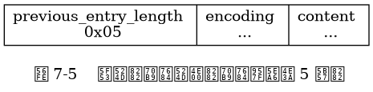
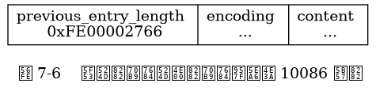
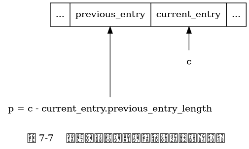
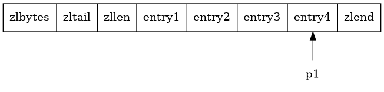
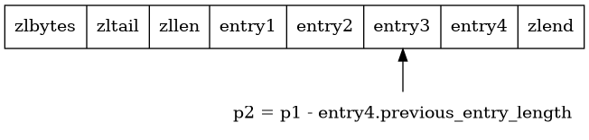
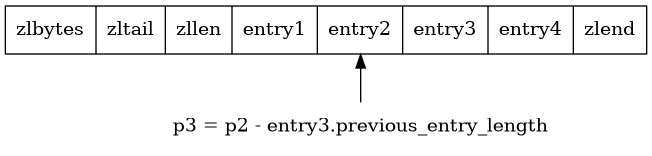
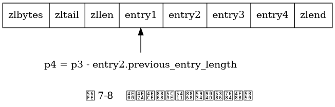
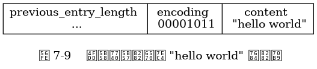
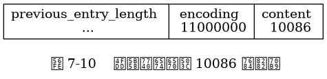

previous_entry_length
节点的 previous_entry_length 属性以字节为单位，
记录了压缩列表中前一个节点的长度。
previous_entry_length 属性的长度可以是 1 字节或者 5 字节：
图 7-5 展示了一个包含一字节长 previous_entry_length 属性的压缩列表节点，
属性的值为 0x05 ，
表示前一节点的长度为 5 字节。

图 7-6 展示了一个包含五字节长 previous_entry_length 属性的压缩节点，
属性的值为 0xFE00002766 ，
其中值的最高位字节 0xFE 表示这是一个五字节长的 previous_entry_length 属性，
而之后的四字节 0x00002766 （十进制值 10086 ）才是前一节点的实际长度。

因为节点的 previous_entry_length 属性记录了前一个节点的长度，
所以程序可以通过指针运算，
根据当前节点的起始地址来计算出前一个节点的起始地址。
举个例子，
如果我们有一个指向当前节点起始地址的指针 c ，
那么我们只要用指针 c 减去当前节点 previous_entry_length 属性的值，
就可以得出一个指向前一个节点起始地址的指针 p ，
如图 7-7 所示。

压缩列表的从表尾向表头遍历操作就是使用这一原理实现的：
只要我们拥有了一个指向某个节点起始地址的指针，
那么通过这个指针以及这个节点的 previous_entry_length 属性，
程序就可以一直向前一个节点回溯，
最终到达压缩列表的表头节点。
图 7-8 展示了一个从表尾节点向表头节点进行遍历的完整过程：
首先，我们拥有指向压缩列表表尾节点 entry4 起始地址的指针 p1
（指向表尾节点的指针可以通过指向压缩列表起始地址的指针加上 zltail 属性的值得出）；
通过用 p1 减去 entry4 节点 previous_entry_length 属性的值，
我们得到一个指向 entry4 前一节点 entry3 起始地址的指针 p2 ；
通过用 p2 减去 entry3 节点 previous_entry_length 属性的值，
我们得到一个指向 entry3 前一节点 entry2 起始地址的指针 p3 ；
通过用 p3 减去 entry2 节点 previous_entry_length 属性的值，
我们得到一个指向 entry2 前一节点 entry1 起始地址的指针 p4 ，
entry1 为压缩列表的表头节点；
最终，
我们从表尾节点向表头节点遍历了整个列表。




content
节点的 content 属性负责保存节点的值，
节点值可以是一个字节数组或者整数，
值的类型和长度由节点的 encoding 属性决定。
图 7-9 展示了一个保存字节数组的节点示例：
编码的最高两位 00 表示节点保存的是一个字节数组；
编码的后六位 001011 记录了字节数组的长度 11 ；
content 属性保存着节点的值 "hello world" 。

图 7-10 展示了一个保存整数值的节点示例：
